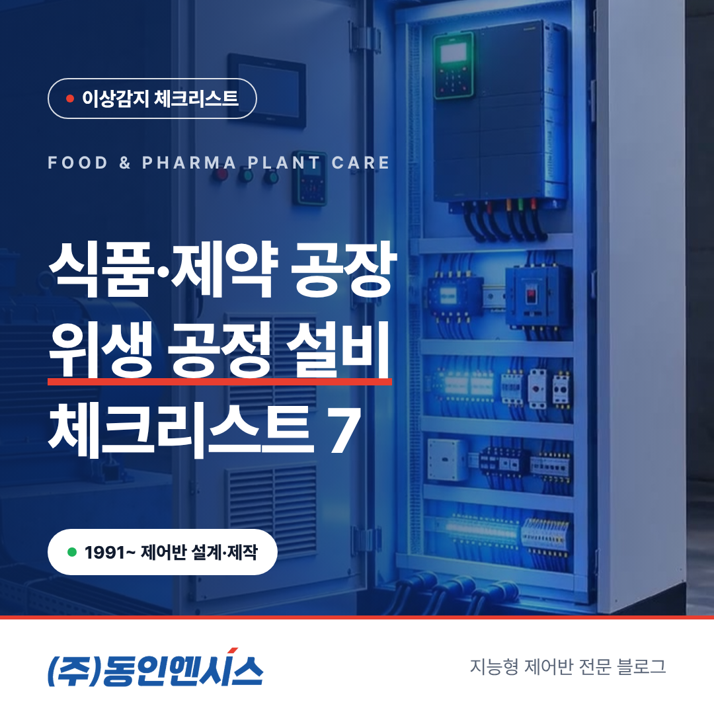
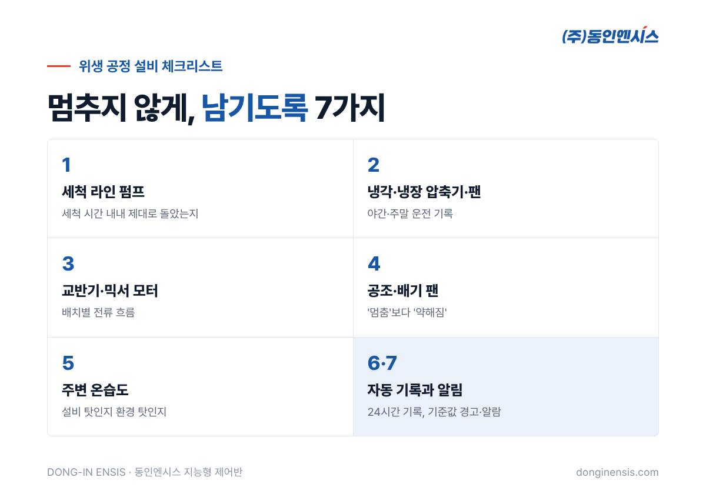
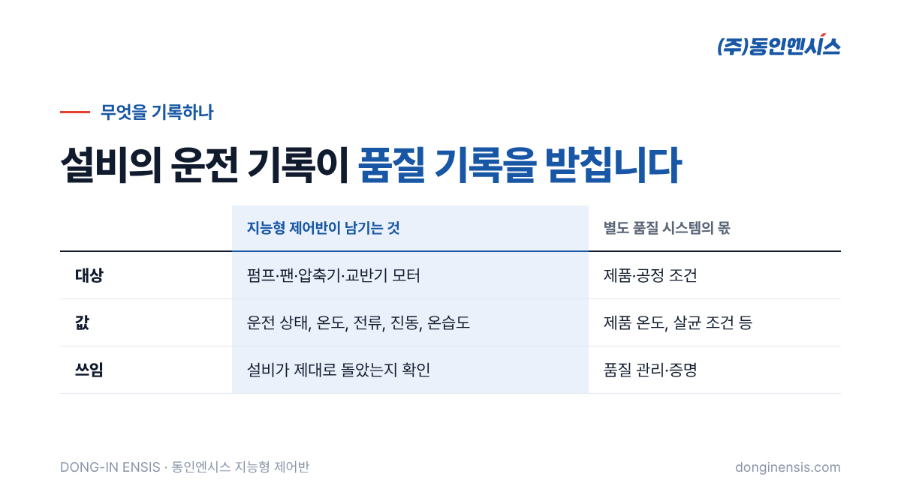

식품과 제약 공장에서 설비가 멈추면 손해는 생산량에서 끝나지 않습니다. 세척이 덜 끝난 라인, 온도가 흐트러진 냉각 구간, 중간에 멈춘 배치는 품질과 위생 문제로 번지기 쉽습니다. 1991년 부산에서 문을 연 뒤 공장 제어반을 직접 설계하고 제작해 온 동인엔시스가, 위생 공정을 지키는 식품 공장 설비 관리에서 먼저 챙길 일곱 가지를 체크리스트로 정리했습니다. 실적 소개가 아니라, 이런 현장에 지능형 제어반을 적용한다면 어떻게 쓸 수 있는지에 대한 이야기입니다.
일반 공장에서 펌프 한 대가 잠깐 서는 것과, 식품·제약 공장에서 세척 펌프가 서는 것은 무게가 다릅니다. 위생 공정은 '정해진 조건을 정해진 시간 동안 지켰다'는 것이 품질의 일부이기 때문입니다.
그래서 이런 현장의 설비 관리는 두 가지를 함께 봐야 합니다. 설비가 멈추지 않게 지키는 일, 그리고 설비가 제대로 돌았다는 것을 기록으로 남기는 일입니다. 아래 일곱 가지는 이 두 가지를 기준으로 골랐습니다.

배관과 탱크를 씻어 내는 세척 공정은 일정한 흐름이 일정 시간 이어져야 의미가 있습니다. 세척 펌프가 중간에 서거나 힘이 떨어지면, 겉보기에는 공정이 끝났어도 실제로는 덜 씻긴 상태일 수 있습니다.
원료와 완제품을 차갑게 지키는 설비는 밤에도 주말에도 돌아갑니다. 사람이 없을 때 압축기나 응축기 팬이 서면 아침에야 알게 되는 경우가 많습니다.
배치 공정에서 교반이 중간에 멈추면 그 배치 전체를 다시 봐야 할 수 있습니다. 부하가 큰 설비라 모터에 무리가 쌓이기도 쉽습니다.
교반기는 원료의 점도나 투입량에 따라 부하가 크게 달라집니다. 배치별 전류 기록을 나란히 놓아 보면, 설비 이상인지 원료 차이인지 구분하는 데 도움이 됩니다. 같은 제품인데 어느 날부터 전류가 꾸준히 높게 나온다면 감속기나 베어링 쪽을 먼저 의심해 볼 수 있습니다.
청정 구역의 공기를 바꾸고 습기를 빼는 팬은 눈에 잘 띄지 않는 곳에서 돕니다. 소리가 조금 커지거나 진동이 늘어도 바로 알아차리기 어렵습니다.
팬은 고장이 나도 생산이 바로 멈추지는 않아 뒤로 밀리기 쉽습니다. 하지만 공기 흐름이 약해진 채로 며칠을 보내면 습기와 결로가 쌓이고, 그것이 결국 위생 문제로 돌아옵니다. 그래서 '멈춤'보다 '약해짐'을 잡아내는 것이 이 설비의 관리 포인트입니다.
세척수와 스팀을 많이 쓰는 공장은 습도가 높고, 제어반과 모터는 습기에 약합니다. 설비 주변 온습도를 함께 기록해 두면, 설비 온도가 오른 것이 설비 탓인지 환경 탓인지 가려 볼 수 있습니다. 세척 시간대에는 습도가 크게 오르고, 여름 오후에는 설비실 온도가 함께 오르는 식의 패턴도 기록을 쌓으면 보이기 시작합니다. 이런 패턴을 알면 환기 시간이나 점검 일정을 조정하는 근거가 됩니다.
Photorealistic photo of a hygienic stainless steel centrifugal pump with motor and polished stainless pipes in a clean food processing plant utility area, white epoxy floor, drain grate, a stainless steel control cabinet on the wall, bright clean lighting, no people, no brand logos, no readable text. 3:2 landscape.
위생 공정에서는 '언제 어떤 설비가 어떻게 돌았는지'를 묻는 일이 잦습니다. 점검표에 손으로 적는 방식은 바쁜 날 빠지기 쉽고, 나중에 찾기도 어렵습니다.
동인엔시스 지능형 제어반은 설비를 제어하면서 운전 상태와 온도, 전류, 진동 같은 값을 24시간 자동으로 남깁니다. 지난 기간의 이력은 화면에서 바로 찾을 수 있고, CSV 파일로 내려받아 다른 기록과 함께 보관할 수도 있습니다.
기록만큼 중요한 것이 알림입니다. 센서별 기준값을 넘으면 경고와 알람이 뜨도록 해 두면, 설비가 완전히 서기 전에 담당자가 먼저 손을 쓸 수 있습니다. 기준값은 시운전과 안정화 기간에 현장 상황을 보며 정하고, 계절이나 생산 품목이 바뀌면 다시 맞춥니다.

오해가 없도록 분명히 해 둡니다. 지능형 제어반이 남기는 것은 펌프, 팬, 압축기, 교반기처럼 모터로 움직이는 설비의 운전 데이터입니다. 제품 자체의 온도나 살균 조건을 관리하고 증명하는 품질 시스템을 대신하는 것은 아닙니다.
다만 설비가 제대로 돌았다는 기록은 품질 기록을 뒷받침하는 좋은 근거가 됩니다. 문제가 생겼을 때 "그 시간에 세척 펌프는 정상이었나"를 바로 확인할 수 있다면, 원인을 좁히는 시간이 크게 줄어듭니다.
Photorealistic photo of an industrial refrigeration machine room at a food factory: compressor units with insulated copper pipes, condenser fans, a light-grey control cabinet with status lamps, clean painted floor, cool even lighting, no people, no brand logos, no readable text. 3:2 landscape.
일곱 가지를 한꺼번에 챙기려 하면 부담이 큽니다. 아래 순서로 우리 공장의 첫 설비를 골라 보세요.
대개 1번에서 답이 나옵니다. 그 설비의 제어반을 바꾸고 몇 달 기록을 쌓아 보면, 다음에 어떤 설비로 넓힐지도 자연스럽게 정해집니다.
Q. 위생 구역 안에 제어반을 두어도 되나요? 설치 위치는 현장의 위생 구역 구분과 세척 방식에 따라 정합니다. 현장 분석 때 설비 배치와 동선을 보고 함께 결정합니다.
Q. 라인 전체를 한 번에 바꿔야 하나요? 아닙니다. 멈추면 가장 곤란한 설비 한두 대부터 제어반을 바꾸고, 효과를 본 뒤 넓혀 가는 방식을 권합니다. 설비 자체는 그대로 둡니다.
Q. 제약 공장도 같은 방식인가요? 모터로 움직이는 설비의 운전 데이터를 남긴다는 점은 같습니다. 다만 공정과 기록 관리 방식이 현장마다 달라, 어떤 설비의 어떤 값을 남길지는 현장 분석에서 따로 정합니다.
Q. 식품 공장 설비 관리에 쓴 실적이 있나요? 이 분야는 아직 공개할 수 있는 납품 실적이 없습니다. 모터로 구동되는 설비라면 같은 방식으로 적용할 수 있어, 현장 조건을 먼저 듣고 적용 가능성을 진단해 드립니다.
식품 공장 설비 관리의 핵심은 설비를 멈추지 않게 하는 것, 그리고 제대로 돌았다는 사실을 남기는 것입니다. 일곱 가지 가운데 우리 공장에 가장 아픈 항목 하나부터 시작해 보세요. 동인엔시스가 그 설비의 제어반부터 함께 살펴보겠습니다.
☎ 051-862-3668 · ✉ dongin@donginmne.com
아래 질문 중 하나에 실제 경험으로 답해 본문 적당한 곳에 넣어 주세요. 사람이 직접 쓴 문장이 들어가면 네이버에서 저품질 위험이 줄고 노출에 도움이 됩니다.